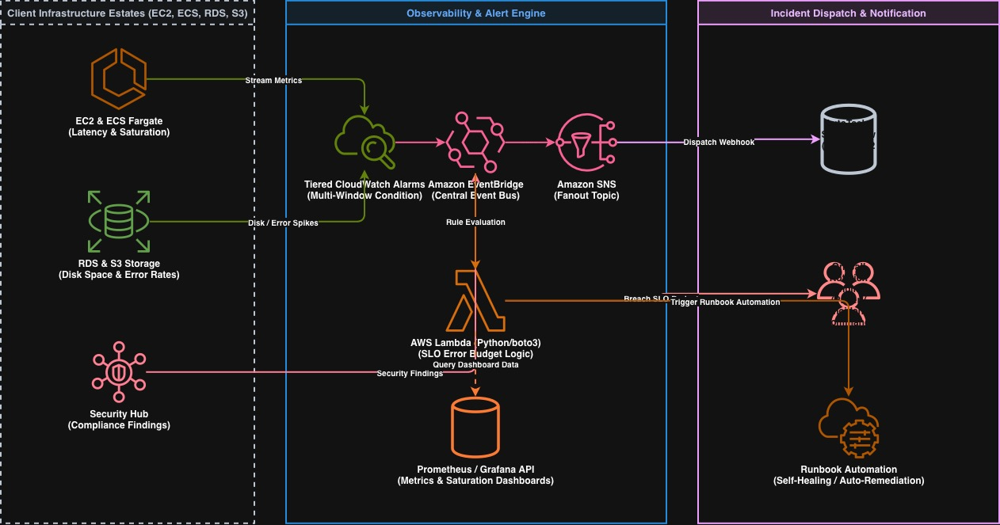
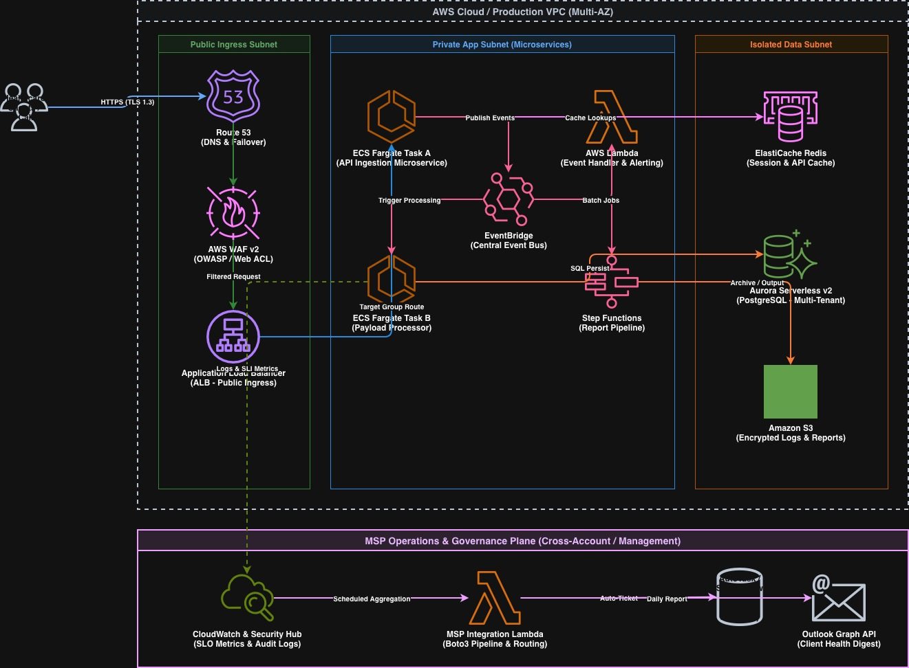
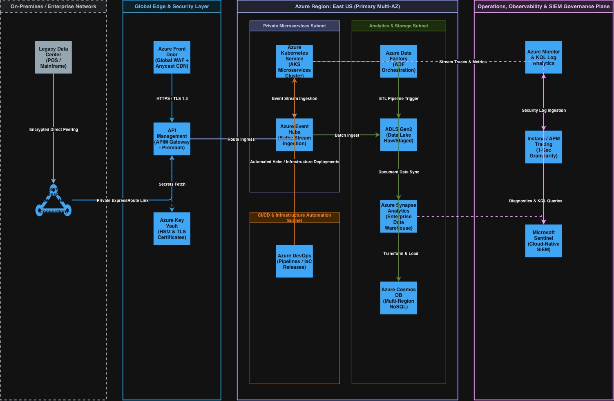
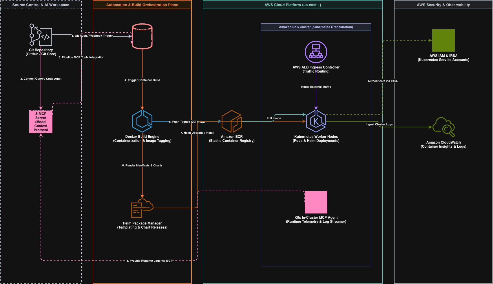

I build cloud systems that are reliable and easy to trust.
I work with cloud infrastructure, reliability, and automation. I design systems that stay up, watch over the ones already running, and automate the repetitive parts.
In college, I couldn't afford a new laptop. My brother gave me his old one, but it was too slow for what I wanted to do. So I learned how to open it up and upgrade it myself. That's when I got interested in computers.
Since then, I've kept learning how systems work and how to make them safer and more reliable. I even built my own VPN, just to understand how it worked.
Today, I design and look after cloud infrastructure that people rely on every day.
Outside of work, I enjoy soccer, chess, photography, hiking, and reading about history and philosophy.
A few of the things I spend my time on
Cloud Infrastructure
I design and run cloud infrastructure on AWS and Azure, including networking, compute, and storage.
Reliability & Observability
I build dashboards and alerts that catch problems early, so they get fixed quickly.
Automation & Infrastructure as Code
I automate repetitive work using tools like Terraform and CI/CD pipelines.
Security & Compliance
I set up secure access and manage secrets, so systems stay safe and easy to audit.
Cost Awareness (FinOps)
I keep cloud costs visible and under control as systems grow.
Disaster Recovery
I plan and test recovery steps, so teams are ready if something goes wrong.
A peek behind the curtain
Here are a few systems I've designed, explained in plain language.

Watching systems and catching problems early
Different parts of the infrastructure send regular updates on how they're doing. A central system checks these updates for real problems, not small blips. If something needs attention, it's sent to the right person. Some known issues are fixed automatically, with no human needed.

Keeping data safe with different access levels
This system has three areas. The public area is open to everyone, but every request is checked first. The middle area handles the actual processing. The data area is the most protected, and only the processing area can reach it. A separate team also watches over several systems like this one and sends daily health reports.

Connecting an older system to the cloud, safely
This one connects an older, on-site data center to the cloud using a private, direct link instead of the public internet. Requests pass through a security layer that checks them first. Inside the cloud, one area handles application requests, and another manages data, from collection to storage to analysis. A separate team watches system activity and security logs the whole time.

Shipping code automatically, with an AI assistant kept in the loop
When code is pushed, it automatically builds, packages, and deploys itself to a cluster of servers that route traffic to the right place. An AI assistant reviews the code before it ships and keeps receiving live logs afterward, so it always knows what is actually running.
Tools I reach for
The rest of the picture
Away from work, here's what I enjoy.
Say hello
Have a question or just want to say hi? Send me a message.